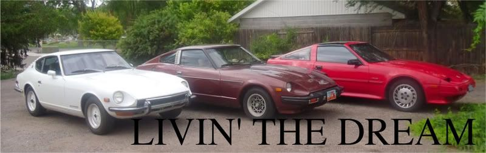

-
Hmmm, yeah I kind of skimped on the directions in that section. This may call for a little editing.260zturbo wrote: I just this to a spare rack i bought. Pretty straight forward instructions. The only pita thing about it was the ring off the steering rod. Trying to get the thing off without beating up your rod is tedious. Great writeup even though the rack wont see the z until a month or so.
Glad it has been helpful to people, I want to do a complete coilover writeup, but I have to be able to buy the damn things first, lol.
LaterZ.1986 300ZX, Got the 85 Turbo Engine, Satan's Exhaust manifold, GT35R, Tial 44mm WG, Tial 50mm BOV, Nistune, 460cc Injectors, Treadstone Intercooler, NGK Wideband, Greddy Profec B Spec II EBC, 16 PSI and rising, heehee.
1993 300ZX Convertible, Pearl White, Bone Stock summer car.
1985 300ZX Turbo Wrecked (Parts car) : ( In her old days
1984 Mitsubishi Starion \
1987 Dodge Conquest - None of them run, LOL
1988 Mitsubishi Starion / -
What about just filling the rack with power steering fluid and removing the lines to the pump and reservoir, plugging off the holes in the steering box and keeping it how it is in case I ever need to install power steering on the car again? -
You're working against fluid pressure if you do that. Really if you're that bothered by hacking up your steering rack go buy a second one, preferably used. Shouldn't cost you much, maybe a tank or three of gas. If this way didn't have benefits that outweighed the amount of labor involved as opposed to your simple way people wouldn't do it this way. -
I see. Its not the labor or simplicity I was worried about, it was the fact that once it is manual I would have to buy a new steering rack if I wanted to ever re-install the power steering, but I doubt I ever will.TurboDreams wrote: You're working against fluid pressure if you do that. Really if you're that bothered by hacking up your steering rack go buy a second one, preferably used. Shouldn't cost you much, maybe a tank or three of gas. If this way didn't have benefits that outweighed the amount of labor involved as opposed to your simple way people wouldn't do it this way.
Manual steering here I come
-
another really good writeup on de-powering a rack completely:
http://www.motoiq.com/magazine_articles … -rack.aspx
-
Did this on my buds 91 NA Z32. Makes a very big difference in steering feel while driving. We even auto-xed it 2 times, and had a track day at Little Talladega GP during Z Nationals and it was awesome. He is running 18" Infiniti G coupe wheels with sticky tires and is easy to drive. Gets slightly hard when parking.
1986 300ZX Turbo…sold
1990 Skyline GT-R…new money pit
2014 Juke Nismo RS 6-speed…daily -
Just autocrossed my car last weekend. Steering felt great and offered plenty of feedback. The only negative aspect of this is turning under 5mph. Not a big deal really and i've gotten used to it.Bolt on, fast, z31. You can only pick two.
Old weaksauce numbers: 391hp/433tq

-
Good feedback coming from you, especially with those huge baloon tires up front! :nanan?reMatt89 wrote: Just autocrossed my car last weekend. Steering felt great and offered plenty of feedback. The only negative aspect of this is turning under 5mph. Not a big deal really and i've gotten used to it.

1988 300zxt. gt35, stance, etc. Wheels: Varrstoen ES2 18x9.5 et-13 225/40. 18x10.5 et0 245/40
1990 jetta vr6'd -
when I had the belt removed from the pump on my old 84 na the steering was very responsive. I liked it, it felt like I had more control over the vehicle. Wasn't very stiff unless I was under 5 mph, and indeed parking was a bit of a pain a few times, but only if I was trying to squeeze in or out of a tight parking space, but after a couple incidents of walking out into the parking lot to find that someone had hit my Z while pulling in or out of the parking space while it was parked, I started parking in the more roomy areas of the parking lots.
I'm hoping manual steering is just as good if not better! -
^^trade Z's for a day? manual steering sounds cool.Matt89 wrote: Just autocrossed my car last weekend. Steering felt great and offered plenty of feedback. The only negative aspect of this is turning under 5mph. Not a big deal really and i've gotten used to it.
I wrap my paper weights in glitter. -
[quote]Benedict wrote:We can trade off a bit on the way to myrtle this weekend if you want.Originally posted by Matt89Bolt on, fast, z31. You can only pick two.
Old weaksauce numbers: 391hp/433tq
-
Did it, love it. It was easy!!! Thanks for posting it up.
It's great to be a HAWKEYE!
Link to my feedback viewtopic.php?f=18&t=21499&hilit=hawkeye -
Did this this weekend as well. A couple process hints:
1. If you give a single fuck about your workspace put down some cardboard because oh god ATF everywhere.
1b. If you don't already do this, take ten minutes before you start cranking stuff off your Z and crawl around under the car to see where everything is. Everything in the PS system is easier from under the car, I think the only thing I didn't do from underneath was pull the reservoir.
2. Goes much faster if you pull the reservoir, pump, and line pack across the front of the crossmember first, since then you will have a better angle on the PITA hard line to the passenger side, which leads to…
3. There's a PITA hard line to the passenger side of the rack and it's basically impossible to get to the front passenger side mounting bolt without making that line go away first.
3b: If you have an auto (yes, I put manual steering on an auto tranny, don't judge me) the tranny cooler lines are also delightfully in the way for the rear passenger side bolt. You won't be able to get a socket on it, you're gonna have to wrench it off the old-fashioned way. Fortunately the torques are not crazy high.
4. If you're just installing a new manual rack and don't need to make caps out of your old hard lines, and you're thinking "hey I should try to remove the hard lines intact JUST IN CASE or sell them to buy beer," don't bother unless the motor's out. It's a huge goddamn hassle. Just cut them. You're never actually gonna go back to power steering.
5. On an NA with stock motor mounts you definitely do not need to lift the motor like Haynes or one of the other writeups says, as long as you have some degree of spatial awareness. A buddy helps too.
6. If in the process of getting the rack out, you lose track of how the front bushings were installed, they basically make the shape of a teardrop that has just rolled off the windshield. Try that and everything will make perfect sense.
7. Getting the steering column out is a bitch. Take out the four rack bolts first, take off the brackets and bushings so that you have more room to maneuver the rack. Same for getting it in, leave the bushings off until you have the shaft reconnected.
End result is very nice. The steering is really only hard below about 4mph, and even that is a lot easier than just driving with a cut belt or something. The car centers and tracks much better than with a beat old PS rack and road feedback is improved, but not fatiguing. -
Are the racks all the same for all years/models? -
Supposedly the zenki or kouki racks (can't remember which) offer more steering angle.
1986 300ZX Turbo…sold
1990 Skyline GT-R…new money pit
2014 Juke Nismo RS 6-speed…daily

Copyright © 2006–. All rights reserved. Privacy Policy